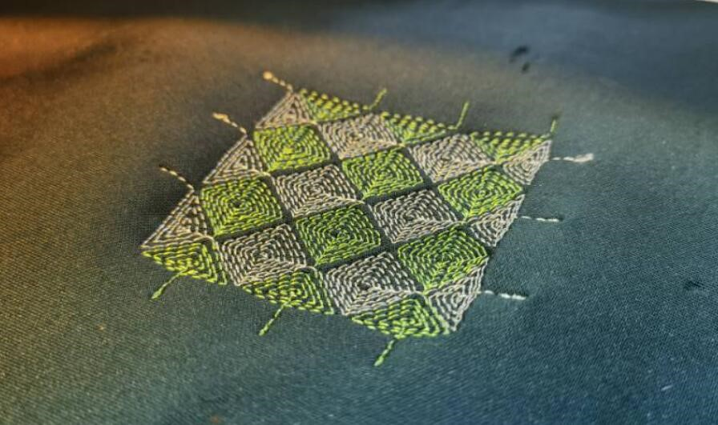
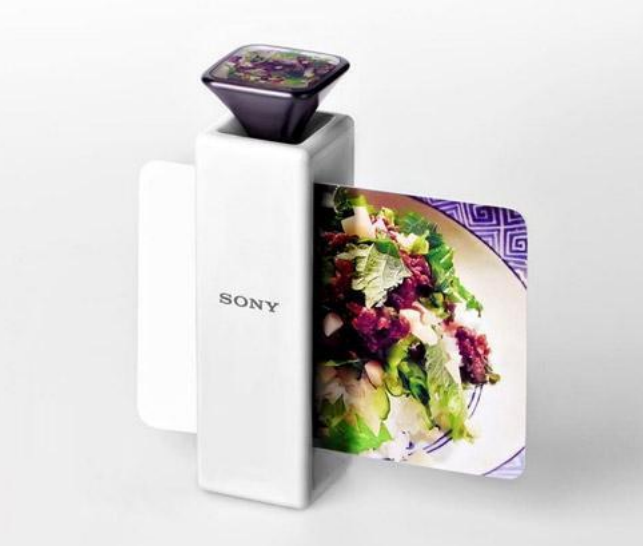
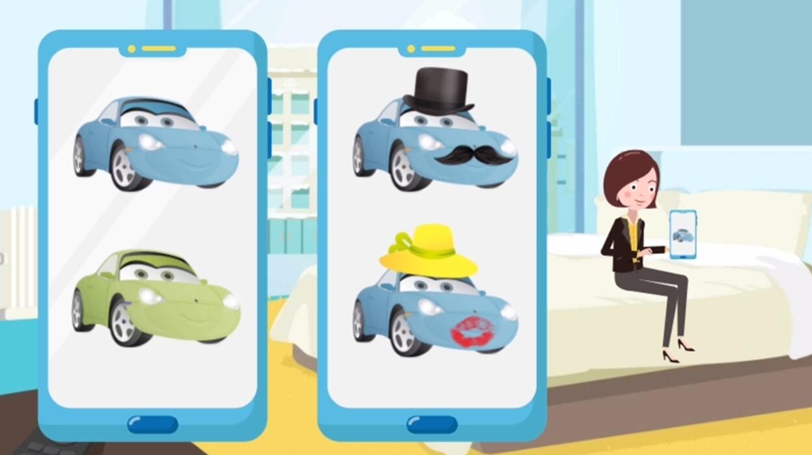
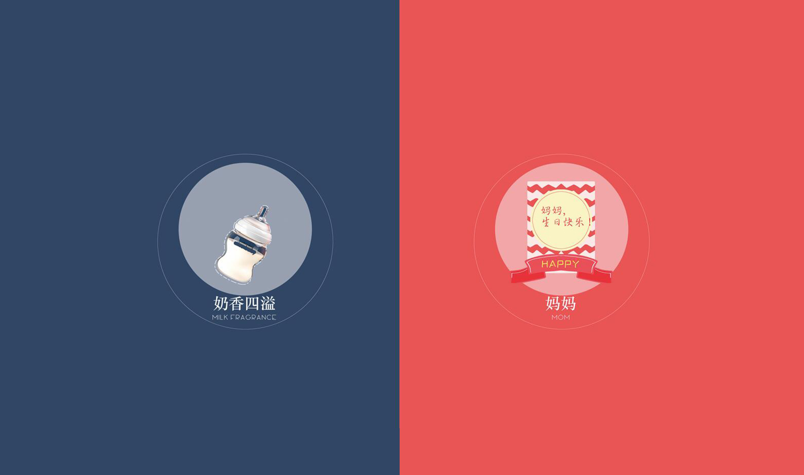
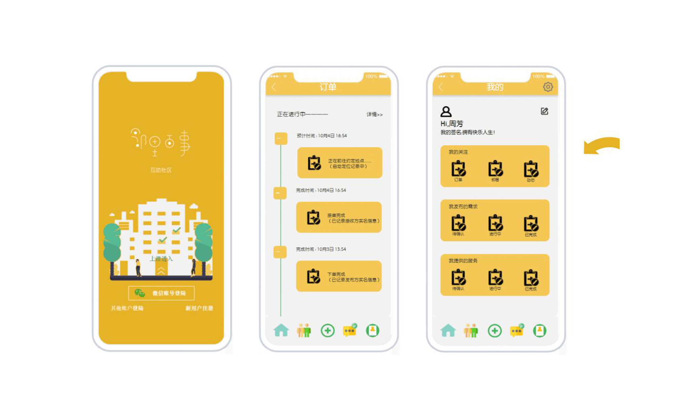
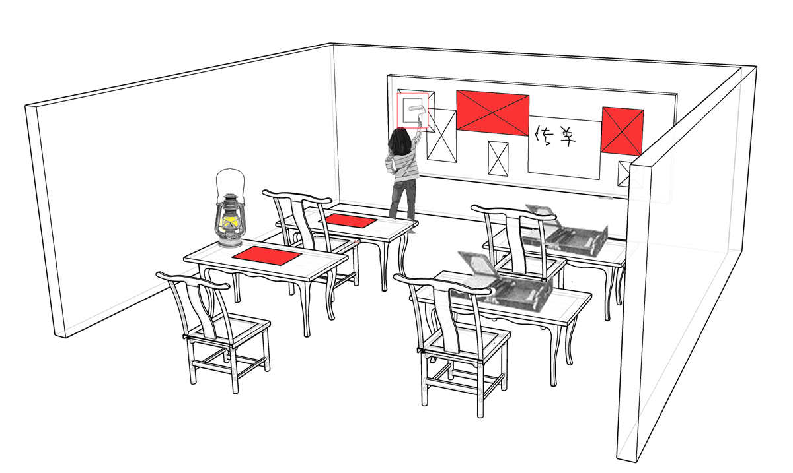
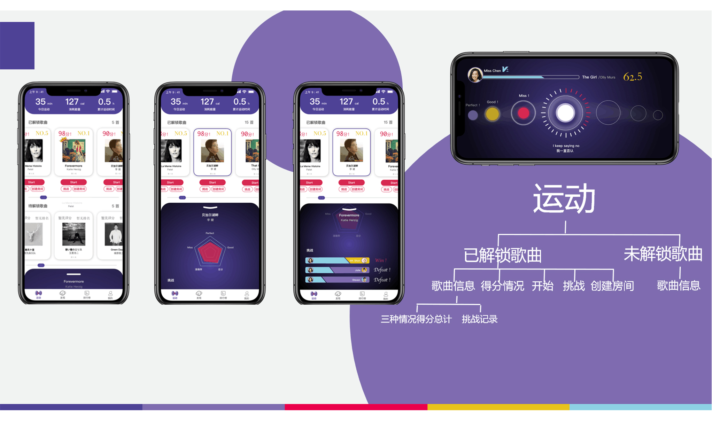

学术科研与创新

织物用于人体运动捕捉中的布局生成研究
毕设 / Matlab / 2022着眼于智能织物用于人体运动捕捉时的传感器布设问题，旨在剖析织物传感器的设计参数与标准，利用算法生成一定条件下更优的布设方案
Read More
织物传感器用于人体运动监测的综述性论文工作
Paper / Review / 2021-2022全面分析基于智能纺织品的人体运动监测可穿戴系统，从材料、传感机理、运动算法、传感布设、原型、反馈、用户等多维度剖析领域相关成果的综述性研究
Read More

面向运动捕捉的互电容刺绣交互界面研究
织物交互界面 / 单片机 / 2021基于互电容刺绣技术，研制出可多点交互的织物界面原型，约形成了20余例织物交互界面，连接电脑进行触控
Read More Poster{kind=link}
上肢康复织物传感网设计方法与评估
项目申报 / 特征选择优化 / 2021面向上肢康复运动捕捉的织物传感器布设方案的智能生成，以支持脑卒中患者的有效的康复训练，研究拉伸应变织物传感单元特性和高精度织物传感网布设方案优化生成算法
Read More

温致变色刺绣的织物界面制造工艺
专利&工作坊 / 智能变色织物 / 2021实现基于罗泾十字挑花的感温变色刺绣织物，能够完成通电激活变色功能，并申报基于温致变色刺绣的织物界面制造工艺专利
Read More

数字感知时代的嗅觉在中国的发展概述
课程论文 / 数字嗅觉 / 2020综述了目前国内对数字嗅觉的研究概况，从理论研究、技术手段、行业应用、商业产品等角度进行调研和分析。
Read More PDF

虚拟车朋友：车与你的情感依赖
创新创业课 / 汽车场景创新 / 2021打造一个(基于AR的)车虚拟朋友，让车内外时空与车形成日常、反复的行为交互，让人与车形成依赖，这种与车之间的依赖，带来个人归属感，带来情感牵引。
Read More

[变味]嗅错觉与情感唤起
媒体传达课 / 嗅觉展览 / 2020[简单的气味错觉] [欺骗性的气味错觉] [讽刺性的气味错觉] [故事性的气味错觉] 由浅入深，吸引观众探索不同的嗅觉故事
Read More

邻里百事互助社区应用
交互设计课 / 交互原型 / 2020从激活社区本身资源的角度出发,构建一个资源互联的社区,帮助实现实现社区内、社区与社区之间的信息共享,最终能够构成社区资源互助生态圈
Read More
无法挽回的呼吸-为死亡而设计
媒体传达课 / 概念交互 / 2020用弱交互式呼吸聆听的H5形式，表达与体验肺炎患者最后的moment，用近乎暴力的方式灌入听者的耳朵，结合交互操作激起观者的无力、绝望、压抑
Read More

[那些人]时代变迁互动展馆设计
交互设计课 / 互动展馆 / 2020根据历史和影视文艺作品为参考，虚构出四个时代不同角色，让参观者分别体验多人物在不同时代的生活片段，“具象、写实、体验”时代的缩影
Read More

S-Sports，游戏化健身应用
交互设计课 / 交互原型/Processing / 2019面向无驱动力健身人群，加入游戏化设计提升用户健身体验，建立智能可穿戴健身产品与用户之间的游戏化律动互动桥梁
Read More